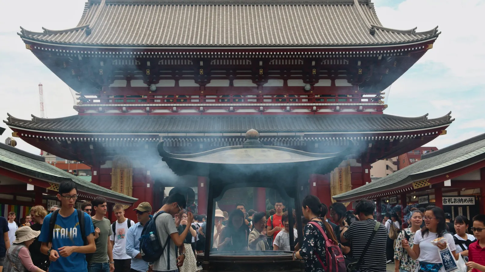

In breve
I giapponesi non si aspettano che un turista conosca tutte le regole, e sono molto indulgenti. Ma cinque cose contano davvero: togliere le scarpe dove c'è un gradino, non lasciare la mancia, non telefonare sui mezzi, portare con sé i rifiuti e lavarsi prima di entrare negli onsen. Il trucco migliore? Guarda cosa fanno le persone intorno a te e fai lo stesso.
Scarpe, case e ryokan
1. Togli le scarpe dove c'è un gradino
In casa, nei ryokan, in molti templi, in alcuni ristoranti e perfino nei camerini c'è un ingresso (genkan) un gradino più basso del pavimento. Le scarpe restano lì, con la punta verso la porta; sali in calze o con le pantofole fornite. Mai camminare sui tatami con le pantofole: solo calze o piedi nudi. Metti calze senza buchi e scarpe facili da sfilare.
2. Usa le pantofole del bagno, e solo lì
Molte case e ryokan hanno pantofole apposite dentro il bagno. Mettile sulla porta e toglile quando esci: uscire nel corridoio o in sala da pranzo con le pantofole del bagno è l'errore classico del turista (e se ne accorgono tutti).
Soldi e saluti
3. Non lasciare la mancia
La mancia non fa parte della cultura e può mettere in imbarazzo: il personale potrebbe rincorrerti per restituirti i soldi. Il buon servizio è compreso. Nei ristoranti e nei negozi appoggia contanti o carta sul vassoietto accanto alla cassa invece di darli in mano.
4. Un piccolo inchino vale molto
Nessuno si aspetta un inchino perfetto da un turista, ma un leggero cenno del capo quando ringrazi (arigatō gozaimasu), saluti o chiedi scusa è sempre apprezzato. La stretta di mano va bene in ambito di lavoro; abbracci e pacche sulle spalle no.
A tavola
5. Bacchette: due cose da non fare mai
Mai piantare le bacchette in verticale nella ciotola di riso e mai passare il cibo da bacchette a bacchette: entrambe ricordano i riti funebri. Evita anche di indicare con le bacchette, leccarle o sfregare tra loro quelle usa e getta. Quando fai una pausa appoggiale sul poggia-bacchette o di traverso sulla ciotola.
6. Risucchia i noodles, ma non soffiarti il naso
Risucchiare ramen o soba è normale e mostra che ti piace. Soffiarsi il naso a tavola no: esci o vai in bagno. Usa l'oshibori (salviettina umida) solo per le mani, non per il viso. Di' itadakimasu prima di mangiare e gochisōsama deshita quando esci: trovi tutto nella guida alle frasi al ristorante.
Treni e strada
7. Silenzio su treni e autobus
Niente telefonate sui mezzi: metti il telefono in silenzioso ("manner mode"). Parla a bassa voce, tieni lo zaino davanti o sulla cappelliera e lascia i posti prioritari a chi ne ha bisogno. Mangiare va bene sullo shinkansen e sui treni a lunga percorrenza, non sui treni locali dei pendolari.
8. Fai la fila e stai dal lato giusto della scala mobile
Ci si mette in fila ordinata sui segni del binario. Sulle scale mobili la regola non scritta è stare a sinistra a Tokyo e a destra a Osaka, anche se ora le stazioni chiedono di stare fermi su entrambi i lati senza camminare: fai come i giapponesi intorno a te.
9. Non mangiare camminando
In molti posti mangiare e bere mentre si cammina per strada non è visto bene, e alcune vie affollate vicino ai templi (per esempio a Kamakura e intorno ad Asakusa) chiedono ai turisti di non farlo. Mangia accanto al chiosco o al distributore dove l'hai comprato.
10. Porta con te i rifiuti
Il Giappone è pulitissimo ma ha pochissimi cestini pubblici. Tieni un sacchetto per i rifiuti e buttali in hotel, nei cestini dei konbini (quando ci compri qualcosa) o in stazione. Dividi combustibile, plastica e bottiglie/lattine dove i cestini lo indicano.
Templi e onsen
11. Nei santuari: purificati, inchinati, batti le mani
Alla fontana chōzuya sciacqua la mano sinistra, poi la destra, poi versa un po' d'acqua nella mano sinistra per sciacquare la bocca (non bere dal mestolo). In un santuario shintoista si prega così: due inchini, due battiti di mani, preghiera, un inchino. In un tempio buddista non si battono le mani: si uniscono in silenzio. Cammina ai lati del viale, non al centro.
12. Onsen: lavati prima, niente costume, asciugamano fuori dall'acqua
Nelle terme e nei bagni pubblici si entra nudi, separati per sesso. Lavati e sciacquati bene agli sgabelli con la doccia prima di entrare; tieni il piccolo asciugamano fuori dall'acqua (molti lo appoggiano sulla testa). Lega i capelli lunghi. Molti bagni rifiutano ancora i tatuaggi: controlla prima o cerca bagni "tattoo friendly" o privati (kashikiri).
Persone e spazi
13. Chiedi prima di fotografare le persone
Mai fotografare geishe o maiko come se fossero un'attrazione, e non seguirle. A Gion, a Kyoto, i cartelli avvisano di multe fino a 10.000 yen per chi entra o fotografa nei vicoli privati. Rispetta anche i cartelli "no foto" in templi, negozi e ristoranti.
14. Attenzione al volume e allo spazio
Gli spazi pubblici giapponesi sono tranquilli. Evita gruppi rumorosi per strada la sera, non bloccare i marciapiedi stretti con valigie enormi (usa la spedizione bagagli, takkyūbin) e non sederti su scalinate o muretti dei templi dove non è permesso.
15. Mascherina se hai il raffreddore
Mettere la mascherina quando hai tosse o starnuti è visto come rispetto per gli altri. Nessuno si stupisce se la porti; molti si infastidiscono se tossisci liberamente su un treno affollato.
Il bigliettino da tenere a mente
| Sì ✅ | No ❌ |
|---|---|
| Scarpe fuori dove c'è un gradino | Pantofole sul tatami |
| Soldi sul vassoietto | Mancia |
| Risucchiare i noodles | Bacchette piantate nel riso |
| Telefono in silenzioso | Telefonate in treno |
| Rifiuti nello zaino | Mangiare camminando |
| Lavarsi prima dell'onsen | Asciugamano nell'acqua |
| Chiedere prima di fotografare | Inseguire le geishe a Gion |
Le regole del Giappone, in tasca.
687 Japan organizza il viaggio a tappe con treni, mappa offline, allerte terremoti e meteo e frasi utili pronte da mostrare. Se qualcosa cambia, NOW ricostruisce il resto della giornata.
Fonti
- Ente nazionale del turismo giapponese (JNTO) – Regole di buone maniere
- JNTO – Usanze e galateo (viaggio responsabile)
- Agenzia del turismo giapponese – Viaggiatore responsabile
- Guida turistica ufficiale di Kyoto
Verificate su questi siti ufficiali a novembre 2026. Prezzi e regole possono cambiare: controlla sempre prima di partire.